Egypt · 2025
이집트, 나흘 — 강을 따라 내려가며 신전을 하나씩
아부심벨에서 시작해 콤옴보, 에드푸를 지나 룩소르까지. 나일강을 거슬러 오르는 게 아니라 따라 내려가는 나흘이었습니다. 2025년 10월의 기록입니다.
부다페스트에서 이틀을 보내고 곧장 넘어온 구간입니다. 유럽의 가을에서 사하라의 한낮으로 하루 만에 건너뛰었으니, 몸이 먼저 알아차렸습니다.
이집트 남부를 도는 일정은 대개 방향이 정해져 있습니다. 아스완에서 시작해 룩소르에서 끝납니다. 나일강이 남에서 북으로 흐르기 때문에, 강을 따라 내려가면 자연스럽게 아스완 → 콤옴보 → 에드푸 → 룩소르 순서가 됩니다. 이 글도 그 순서를 그대로 따라갑니다.
첫째 날 — 옮겨진 산
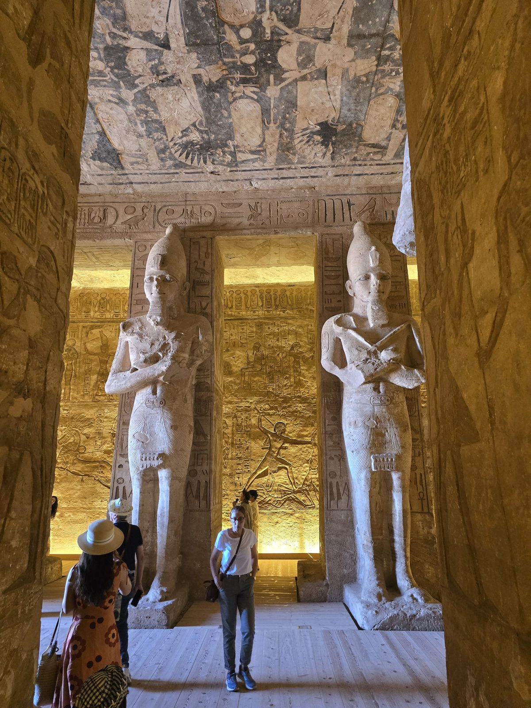
아부심벨의 내부는 사진으로 본 것과 달랐습니다. 밖에서 보는 거대한 좌상 넷이 워낙 유명해서 안은 좁을 거라 생각했는데, 들어서면 오시리스 모습을 한 람세스 2세 기둥이 좌우로 도열해 있습니다. 팔을 가슴 앞에 교차하고, 흰 왕관을 쓰고, 이름을 새긴 카르투슈를 몸에 달고 있습니다. 천장에는 독수리가, 벽에는 전차를 몬 왕이 새겨져 있습니다.
기원전 13세기에 산을 파서 만든 신전입니다. 그런데 지금 서 있는 자리는 원래 자리가 아닙니다. 1960년대 아스완 하이댐이 지어지면서 이 일대가 물에 잠기게 되자, 신전을 통째로 잘라 옮겼습니다. 블록 단위로 해체해 60미터 높은 곳에 다시 조립한 것입니다. 지금 보고 있는 이음매 중 일부는 3천 년 전 것이 아니라 60년 전 것입니다.
그렇게까지 해서 지킨 이유 중 하나는 방향입니다. 이 신전은 1년에 두 번, 아침 햇빛이 정문에서 지성소까지 60미터를 곧장 들어가도록 설계돼 있습니다. 옮길 때도 그 각도를 맞췄습니다.
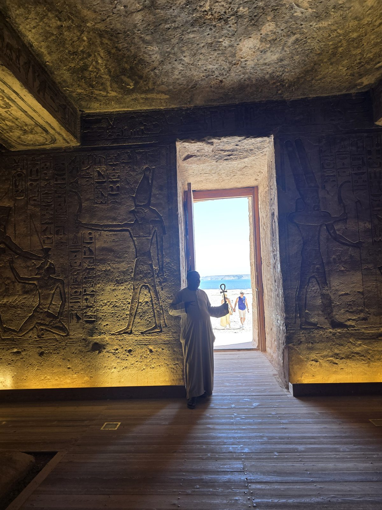
안쪽 방에서 밖으로 난 문을 보면 빛이 하얗게 넘어옵니다. 그 문턱에 갈라비야를 입은 사람이 서서, 손잡이가 달린 십자가 모양의 물건을 들어 보이고 있습니다. 앙크(ʿnḫ)입니다. 벽에 새겨진 신들이 손에 쥐고 있는 것과 같은 모양이고, '생명'을 뜻합니다.
이집트 유적에서 이런 장면은 자주 마주칩니다. 관리인이 다가와 좋은 자리를 알려주거나, 사진을 찍어주겠다고 합니다. 대개 끝에 박시시가 따라옵니다. 강요는 아니지만 기대는 있습니다. 소액 지폐를 미리 나눠 넣어 두면 서로 편합니다.
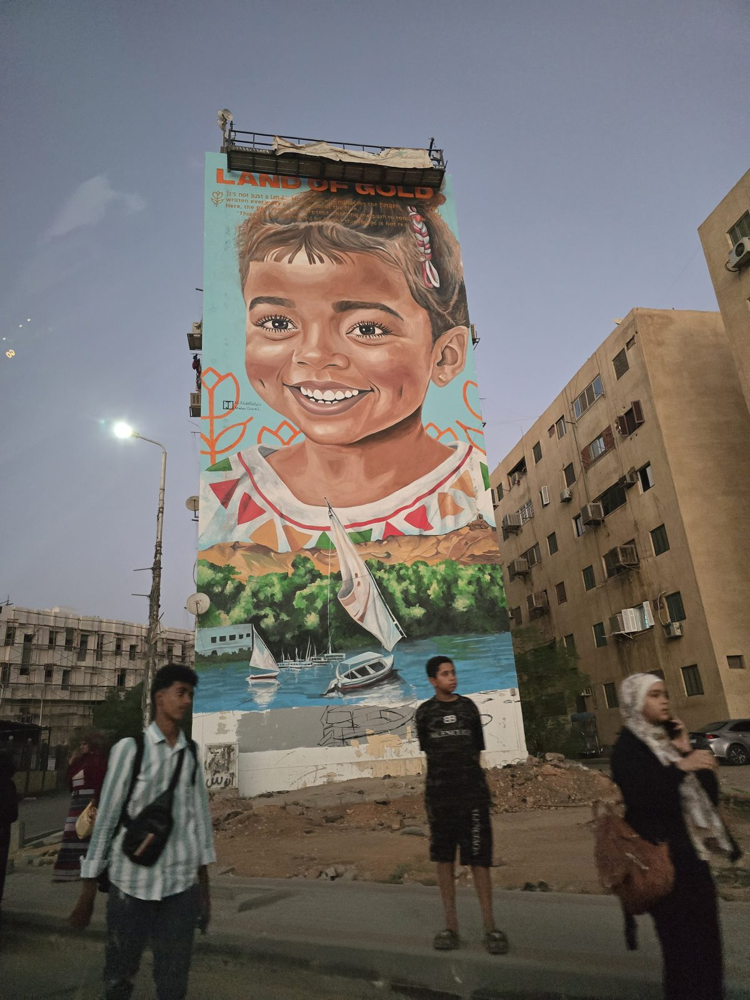
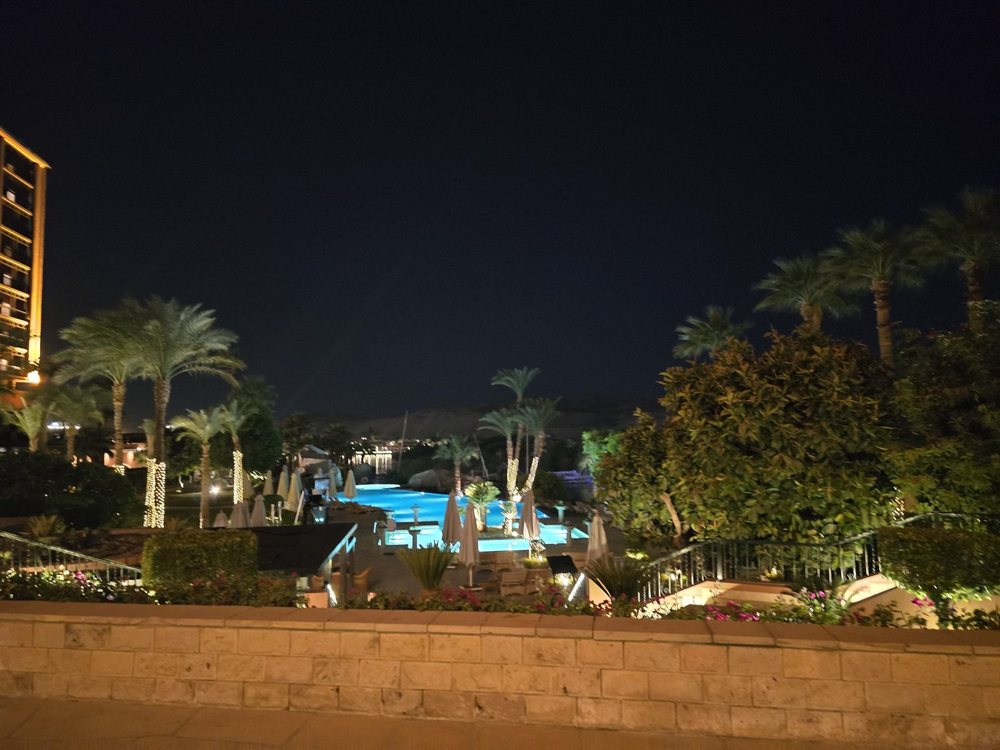
저녁에는 도시 한복판에서 커다란 벽화를 만났습니다. 건물 옆면을 통째로 쓴 그림인데, 활짝 웃는 사람 얼굴 아래로 펠루카 돛배와 강, 사막 언덕이 이어집니다. 큰 글씨로 LAND OF GOLD. 이 지역을 가리키던 옛 이름 누비아가 '황금의 땅'이라는 뜻이라는 설명과 겹칩니다. 벽화 앞 흙바닥에서는 아이들이 뛰어놀고 있었습니다.
그날 밤 숙소의 정원에는 야자수마다 전구를 감아두었고, 수영장 물이 혼자 파랗게 빛나고 있었습니다. 낮에 사막에서 데워진 몸이 그제야 식었습니다.
둘째 날 아침 — 큰 솥과 얇은 빵
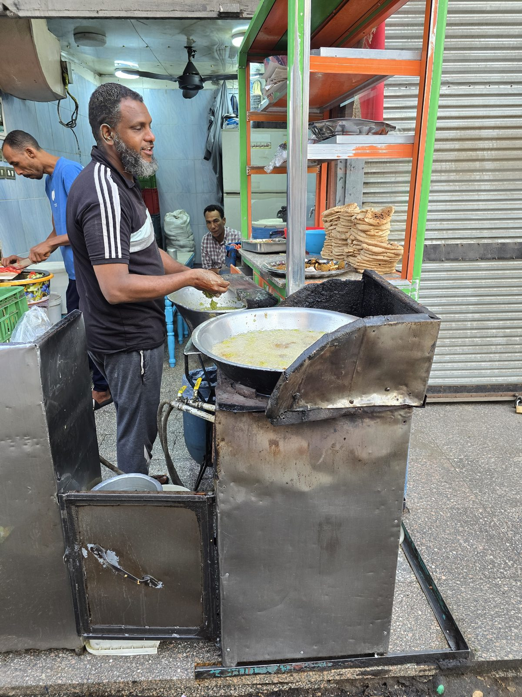
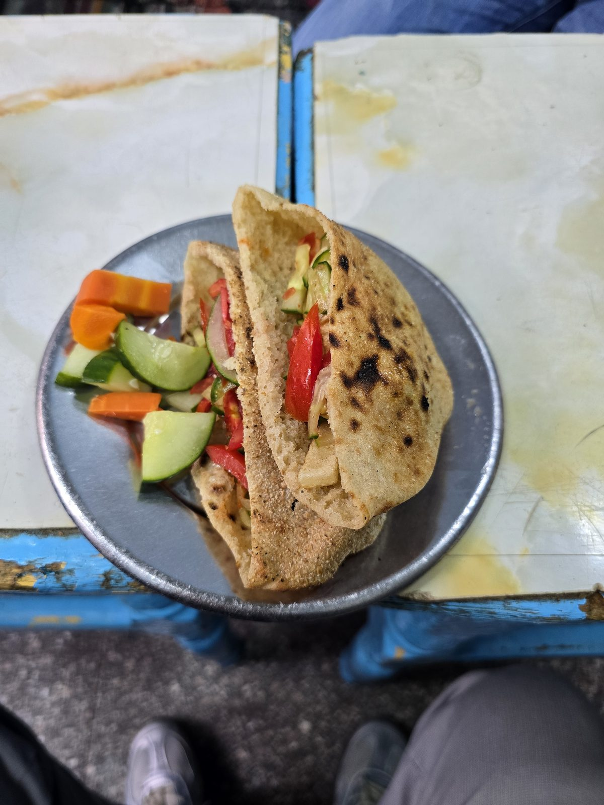
아침 일곱 시 이십 분. 길가 노점 앞에 커다란 알루미늄 솥이 걸려 있고, 흰 수염이 난 남자가 긴 국자로 안을 젓고 있습니다. 노랗고 걸쭉한 것이 가득합니다. 그 옆 쟁반에는 아이시 발라디가 산더미로 쌓여 있습니다. 이집트의 기본 빵으로, 통밀로 구워 가운데가 부풀었다가 식으면서 주머니처럼 비는 납작빵입니다.
삼 분 뒤 나온 것이 오른쪽 사진입니다. 빵을 반으로 갈라 속을 채우고, 토마토와 오이를 썰어 얹고, 당근과 오이 절임을 곁들였습니다. 접시는 양철, 테이블은 페인트가 벗겨진 파란 나무판입니다. 풀(삶은 잠두콩)이나 타아메야(잠두로 만든 이집트식 팔라펠)로 채운 이 조합이 이 나라의 아침입니다.
덧붙이자면 타아메야는 팔라펠과 비슷하게 생겼지만 재료가 다릅니다. 중동의 팔라펠이 병아리콩으로 만드는 반면, 이집트는 잠두를 씁니다. 그래서 속이 더 초록빛이고 부드럽습니다.
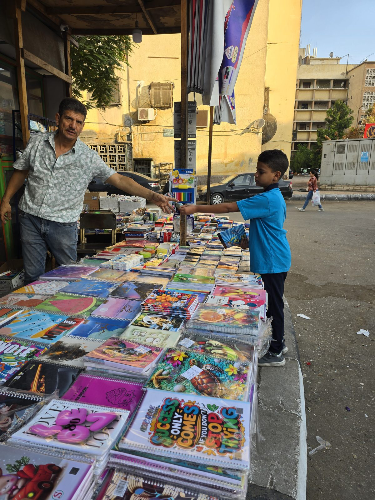
조금 걸으니 인도 위에 공책을 깔아놓은 노점이 나왔습니다. 스프링 공책이 수십 권, 표지에는 미키마우스와 열대어와 수박이 인쇄돼 있고, 그중 하나에는 영어로 "SUCCESS COMES ONLY IF YOU DON'T STOP TRYING"이라고 적혀 있습니다. 색연필과 샤프도 나란히 진열돼 있습니다.
파란 티셔츠를 입은 소년이 진열대 앞에 서 있고, 주인은 손가락으로 뭔가를 가리키며 웃고 있습니다. 관광지에서 조금만 벗어나면 이런 시간이 흐릅니다. 유적 앞의 이집트와 등굣길의 이집트는 완전히 다른 나라처럼 보입니다.
둘째 날 낮 — 신 둘, 그리고 악어
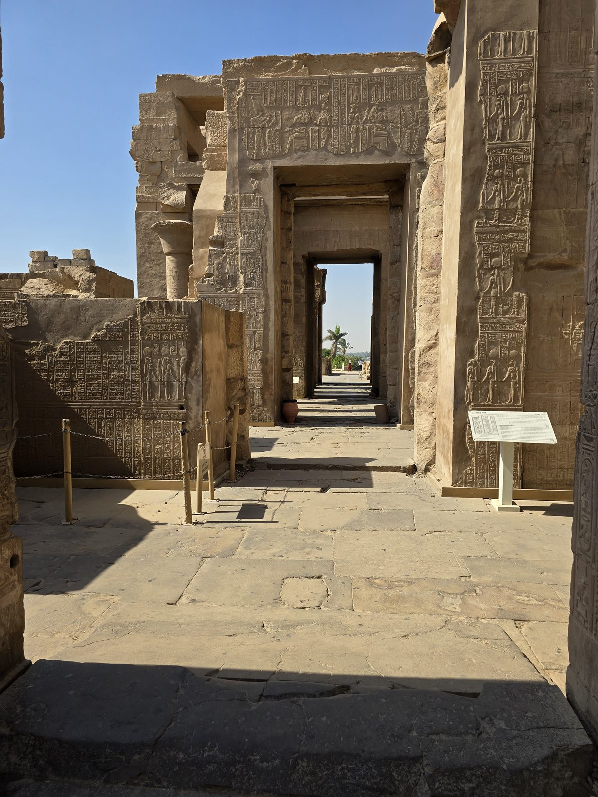
콤옴보 신전은 구조가 특이합니다. 이집트 신전은 보통 한 신을 모시는데, 여기는 둘입니다. 악어 머리를 한 소베크와 매의 머리를 한 하로에리스. 그래서 축이 하나가 아니라 둘이고, 문도 방도 좌우로 나란히 두 벌씩 있습니다. 한쪽 신전을 다 보고 나면 거울처럼 같은 구조가 한 번 더 반복됩니다.
사진에서도 문이 겹쳐 뚫려 있어 저 끝으로 야자수 한 그루와 하늘이 보입니다. 벽은 위에서 아래까지 상형문자로 빼곡하고, 그늘의 경계가 칼처럼 선명합니다. 오전 열 시 반인데 이미 그림자가 짧습니다.
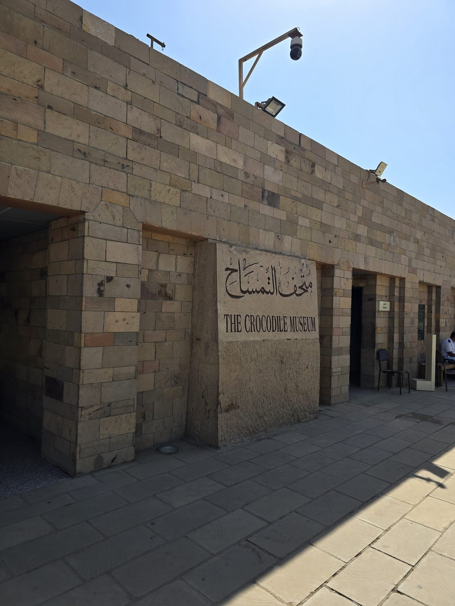
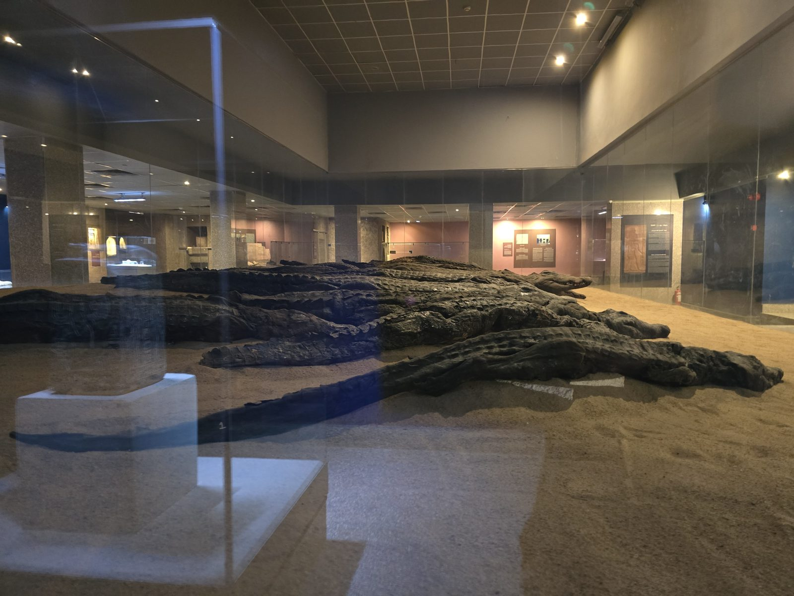
신전에서 몇 걸음 떨어진 곳에 악어 박물관(The Crocodile Museum)이 있습니다. 사암 블록을 쌓아 만든 낮고 단정한 건물이고, 벽에 아랍어와 영어로 이름만 새겨 놓았습니다.
안으로 들어가면 유리 너머 모래 위에 악어 미라가 줄지어 놓여 있습니다. 큰 것은 사람 키를 훌쩍 넘고, 등의 비늘 결까지 남아 있습니다. 이 지역에서 소베크는 나일강 그 자체였고, 사람들은 악어를 신의 몸으로 여겨 미라로 만들어 묻었습니다. 신전 옆에서 수백 구가 나왔습니다.
신전만 보고 지나치기 쉬운데, 박물관은 신전 티켓으로 함께 들어갑니다. 냉방이 되고 십 분이면 다 봅니다. 한낮의 더위를 피하는 자리로도 요긴합니다.
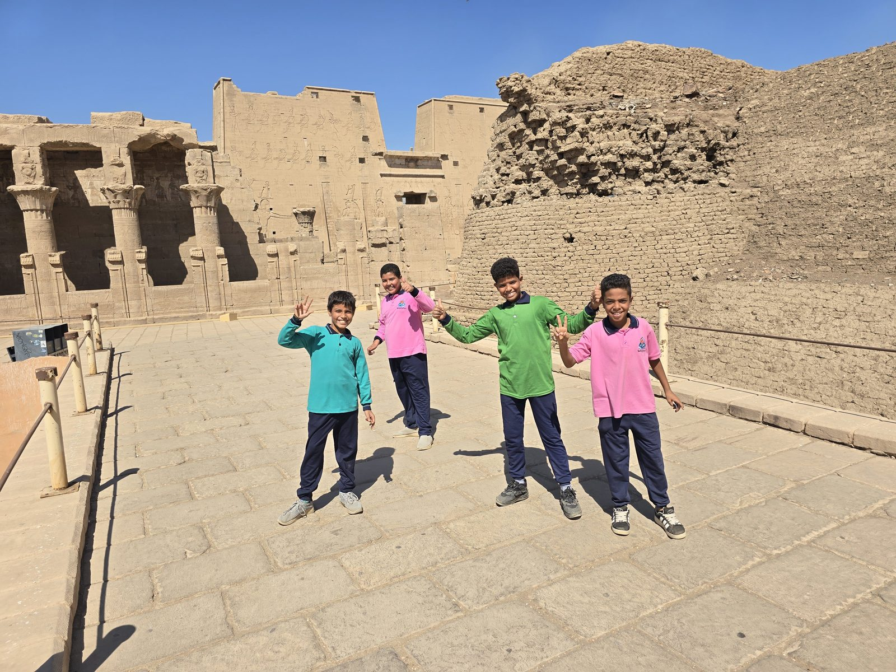
오후 두 시의 에드푸 호루스 신전. 왼쪽으로 기둥이 늘어선 열주랑이, 가운데로 거대한 탑문이 서 있고, 오른쪽에는 흙벽돌이 무너져 쌓인 언덕이 있습니다. 저 언덕은 자연 지형이 아니라 옛 도시가 무너져 쌓인 것입니다. 사람이 살고 무너지고 그 위에 다시 살기를 반복하면 땅이 저렇게 높아집니다.
그런데 사진의 주인공은 신전이 아닙니다. 민트색·분홍색·초록색 폴로 티를 입은 소년 넷이 손가락으로 브이를 그리며 웃고 있습니다. 학교에서 단체로 온 모양이었고, 카메라를 보자마자 저렇게 섰습니다. 삼천 년 된 신전 앞에서 가장 최근에 만들어진 장면입니다.
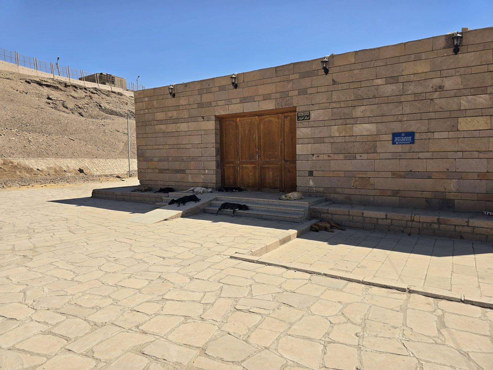
오 분 뒤. VISITOR CENTER라고 적힌 문 앞 계단에 개가 예닐곱 마리 늘어져 있습니다. 검은 놈, 흰 놈, 누런 놈이 각자 계단 한 칸씩 차지하고 배를 깔고 잡니다. 건물이 만드는 그늘이 딱 그만큼입니다.
한낮의 이집트 남부에서 그늘은 자원입니다. 사람도 개도 같은 계산을 합니다. 이 사진 한 장이 그날의 기온을 어떤 숫자보다 잘 설명합니다.
셋째 날 — 무덤과 달
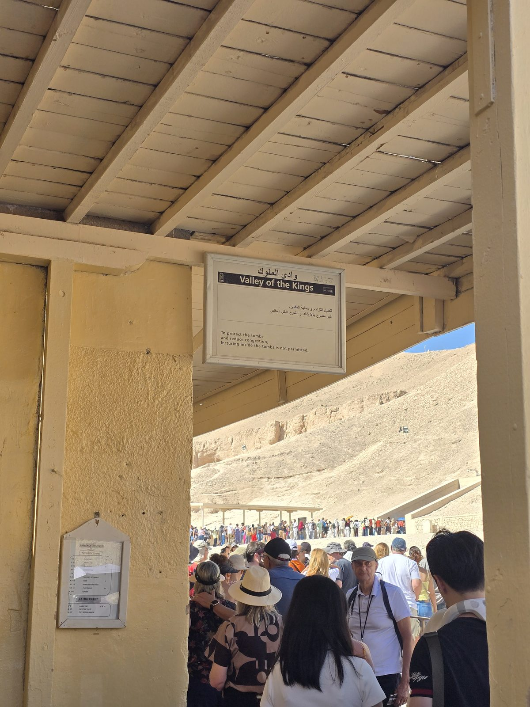
왕가의 계곡 입구입니다. 나무 그늘막 아래 안내판이 걸려 있고, 그 너머로 사람들이 길게 줄지어 서 있습니다. 뒤로는 풀 한 포기 없는 석회암 산이 통째로 서 있습니다. 신왕국의 파라오들이 피라미드 대신 이 골짜기의 바위를 파고 들어가 묻힌 곳입니다.
안내판에는 이렇게 적혀 있습니다. "무덤을 보호하고 혼잡을 줄이기 위해 무덤 안에서의 설명은 허용되지 않습니다." 가이드가 무덤 밖에서 미리 설명을 끝내고, 안에서는 각자 조용히 보고 나오라는 뜻입니다. 아래쪽에는 무덤 번호가 적힌 표가 붙어 있고, 오른쪽에 EXTRA TICKET 칸이 따로 있습니다.
기본 입장권으로 들어갈 수 있는 무덤 수는 정해져 있고, 투탕카멘 같은 몇몇 무덤은 별도 티켓입니다. 현장 안내판의 목록이 그날 실제로 열린 무덤을 알려주니, 표를 사기 전에 한 번 보는 게 낫습니다. 무덤은 돌아가며 닫고 열립니다.
그리고 이 여행에서 가장 오래 서 있었던 자리. 룩소르 신전의 밤입니다.
기둥이 사람 여럿이 팔을 벌려야 안길 만큼 굵고, 아래에서 쏘는 조명을 받아 아이보리색으로 떠 있습니다. 하늘은 완전히 검푸르고, 열주 사이 정확히 가운데에 보름달이 걸려 있습니다. 오른쪽 뒤로는 현대식 건물의 불빛이, 왼쪽으로는 모스크의 미나레트가 보입니다. 3천 년 된 기둥과 어제 켜진 형광등이 한 화면에 들어옵니다.
룩소르 신전이 특별한 이유는 밤에 연다는 점입니다. 낮에는 그늘이 없어 걷기 힘든 유적인데, 해가 지면 조명이 들어오고 공기가 식습니다. 사람도 훨씬 적습니다. 룩소르에서 하루를 짠다면 신전은 밤으로 미루는 편이 낫습니다.
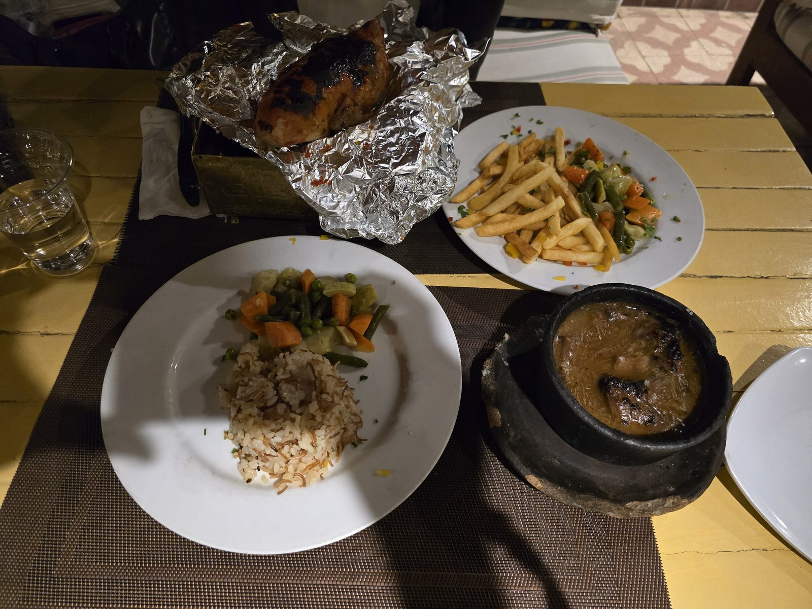
신전을 나와 먹은 저녁입니다. 은박지에 싸인 구운 닭 반 마리, 감자튀김과 삶은 채소 한 접시, 그리고 버미첼리를 섞어 볶은 쌀. 오른쪽 검은 토기에 담긴 것이 타진인데, 모로코의 그 뾰족한 뚜껑 타진이 아니라 이집트식으로 오븐에 그대로 넣어 익히는 작은 항아리 요리입니다.
쌀에 국수를 부숴 넣고 함께 볶는 방식은 처음엔 낯설었는데, 며칠 지나니 이게 없으면 허전했습니다. 여행지의 음식은 대개 사흘째부터 익숙해집니다.
넷째 날 — 후르가다, 대리석 마당
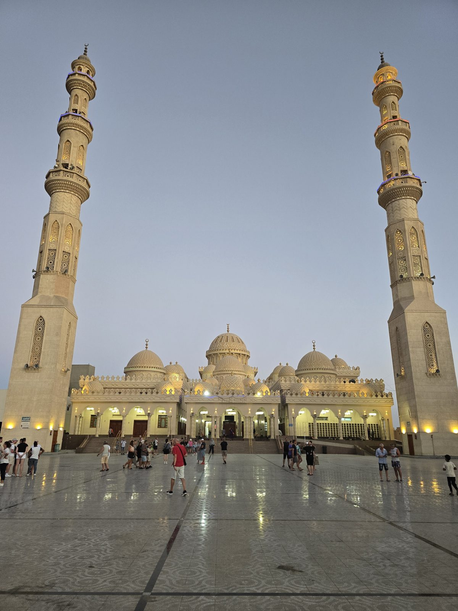
마지막 사진은 유적이 아닙니다. 홍해에 면한 도시 후르가다입니다. 해가 막 넘어간 시각, 아주 넓은 대리석 마당과 그 끝의 모스크입니다. 미나레트 두 개가 좌우에서 하늘로 솟고, 가운데로 크고 작은 돔이 여러 개 이어집니다. 벽면의 격자 창에는 이미 불이 들어와 있고, 젖은 듯 반들거리는 바닥이 그 빛을 길게 반사합니다.
마당을 지나는 사람들의 옷차림이 눈에 띕니다. 반바지와 샌들, 손에 든 쇼핑백. 신전 앞의 옷차림과 다릅니다. 유적을 도는 여정이 끝나고 휴양지로 넘어왔다는 게 사람들 차림에서 먼저 보입니다.
후르가다는 룩소르에서 사막을 가로질러 네 시간쯤 걸립니다. 나흘 동안 강을 따라 북쪽으로 내려온 끝에 방향을 꺾어 동쪽 바다로 나온 셈입니다. 유적으로 시작해 바다로 끝나는 동선은 이집트 남부 여행에서 흔한 마무리이고, 실제로 걸어보니 순서가 이쪽이 맞습니다. 신전을 먼저 보고 나서 쉬는 편이, 쉬다가 신전을 보러 가는 것보다 몸이 덜 힘듭니다.
나흘을 돌아보고 — 실전 정보
- 기간2025년 10월 5일 ~ 8일 (부다페스트 다음 구간)
- 동선아스완 · 아부심벨 → 콤옴보 → 에드푸 → 룩소르 → 후르가다
- 날씨10월인데도 한낮은 35도 안팎. 그늘이 거의 없다
- 통화이집트 파운드(EGP). 소액 지폐를 늘 지니는 게 좋다
- 입국한국 여권은 도착비자 또는 전자비자. 여권 잔여 유효기간 6개월 이상
1. 방향은 강이 정해준다
나일강은 남에서 북으로 흐릅니다. 그래서 아스완에서 시작해 룩소르에서 끝내는 편이 이동이 자연스럽고, 콤옴보와 에드푸가 중간에 자연스럽게 걸립니다. 반대로 짜면 같은 길을 두 번 지나게 됩니다. 남 → 북만 기억하면 일정의 절반은 정해집니다.
2. 한낮을 어떻게 피하느냐가 전부다
이 나흘의 사진을 보면 오전 열 시대와 해가 진 뒤에 몰려 있습니다. 오후 두 시의 사진에는 그늘에서 자는 개들이 찍혔습니다. 유적에는 나무가 없습니다. 모자, 선글라스, 물은 선택이 아니라 장비입니다. 아부심벨처럼 먼 곳은 새벽에 출발하는 일정이 흔한데, 힘들어도 그게 맞습니다.
3. 룩소르 신전은 밤에 간다
같은 유적이 낮과 밤에 완전히 다릅니다. 조명이 들어오면 부조의 음영이 살아나고, 무엇보다 걸을 만해집니다. 낮에는 왕가의 계곡이나 박물관, 밤에는 신전 순서를 권합니다.
4. 소액 지폐를 나눠 넣는다
화장실, 사진, 길 안내에 이르기까지 박시시가 일상적으로 오갑니다. 큰 지폐만 들고 다니면 거스름돈 문제로 매번 곤란해집니다. 소액권을 주머니마다 나눠 두면 실랑이가 크게 줍니다. 원하지 않으면 웃으며 "라, 슈크란"(아니요, 고맙습니다) 한마디면 대체로 정리됩니다.
5. 티켓 구조를 미리 알아둔다
왕가의 계곡처럼 기본 입장권 + 별도 티켓으로 나뉜 곳이 많습니다. 어떤 무덤이 그날 열려 있는지는 입구 안내판이 가장 정확합니다. 콤옴보의 악어 박물관처럼 신전 티켓에 포함된 곳도 있으니, 표를 살 때 무엇까지 되는지 한 번 확인하세요.
6. 유적 밖으로 열 걸음
이 여행에서 기억에 남은 사진 절반은 유적이 아니라 길에서 나왔습니다. 아침 노점의 큰 솥, 공책을 깔아놓은 문구 좌판, 신전 앞에서 브이를 그리던 아이들. 유적은 3천 년째 그 자리에 있지만 그 앞의 생활은 오늘 하루치입니다. 일정에 아무것도 안 정한 아침 한 시간을 넣어두길 권합니다.
남는 것
가장 오래 서 있었던 자리는 룩소르 신전의 열주 사이였습니다. 기둥이 너무 굵어서 고개를 한참 젖혀야 끝이 보였고, 그 사이로 달이 정확히 가운데 걸려 있었습니다. 3천 년 전에 이 기둥을 세운 사람들도 같은 달을 봤을 거라는 생각이, 그 자리에서는 상투적으로 느껴지지 않았습니다.
이집트는 유적의 규모로 기억되는 나라지만, 정작 나흘 뒤에 남은 건 크기가 아니라 대비였습니다. 3천 년 된 벽과 오늘 아침의 빵, 파라오의 무덤과 그늘에서 자는 개, 신전 앞에서 브이를 그리는 아이들. 그 둘이 나란히 있는 게 이 나라의 인상이었습니다.